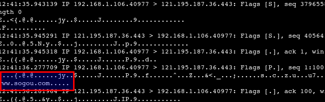

https和SNI
如今（2017年了）在同一个nginx上配置多个域名，是稀松平常的事，纵然是使用https，也不过多配置几个证书的事情，似乎没有什么维护上的困难。然而，细思起来，背后却有很多故事，以至很多网站现在也苦恼不已。
1 基于Host的虚拟主机
Http协议中有Host头，nginx等web服务器正是根据Host的内容，选择不同的虚拟主机。
2 HTTPS 为什么不行
基于Host的虚拟主机，Http没有问题，但是Https不行，为什么呢？因为Https使用SSL/TLS，需要SSL证书才能建立连接，但是同一个nginx上配置了多个SSL证书，使用哪个呢？根据Host选择？这是不可能的，因为Host是Http协议的内容，而这一切发生在发送Http请求前，此时Host还没发送呢。
3 古老的解决方案
在服务器上配置多个IP，一个虚拟主机监听一个IP，对应一个域名，一个SSL证书。这没啥毛病，就是维护起来非常困难。一是nginx配置复杂，每台机器的nginx都和本机的IP有关。二是HA比较困难，VIP漂移也白漂，因为nginx里面IP写死了。
使用多域名证书或者泛域名证书也是一个办法，少量域名还行，域名多了应付起来也费劲。
4 SNI 是干什么的
SNI全称Server Name Indication，它扩展了TLS协议。在请求SSL证书时，把Host放在SNI（明文）里面，这样nginx根据SNI发送合适的证书给客户端。这样HTTPS就和HTTP统一了。通过抓包很容易看出来Host作为SNI放到了请求中。下面是请求 https://www.sogou.com 的情况。

5 客户端和服务器的支持情况
服务器对SNI的支持一向很好，关键是客户端，除了浏览器还有各种语言的开发库，这里面IE6和XP上的IE7都不支持SNI，偏偏这两者在国内的市场份额还很大。这两年小了很多，以后会更少，基本可以忽略这批用户了。这篇文章的意义在于理解Https支持虚拟主机的渊源。